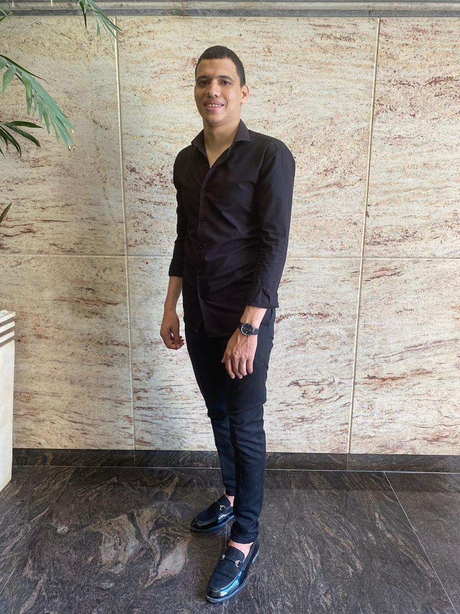

I build SLAM, sensor fusion, navigation, and perception systems for autonomous mobile robots — from indoor/outdoor localization to GPS-denied drones and full autonomy stacks.

I'm a Senior SLAM & Computer Vision Engineer specializing in the full perception-to-autonomy pipeline: 3D reconstruction, multi-sensor fusion (LiDAR, camera, IMU, RTK-GNSS), real-time localization, and mapping.
My work spans industry engagements and full-time roles — high-precision mobile mapping (<10 cm), GPS-denied drone inspection with LiDAR-inertial odometry, vision-guided industrial robotics, and outdoor navigation stacks on Clearpath fleets. I ship production systems on ROS 2, Nav2, MoveIt 2, PX4, and Fast DDS.
I care about systems that hold up in the field — under glare, GPS denial, and real-world tolerances — not just in the lab.
A selection of perception, SLAM, and autonomy systems I've designed and shipped. Click any card for the full technical write-up.
Open to SLAM, computer-vision, and robotics-autonomy engagements. The fastest way to reach me is email.